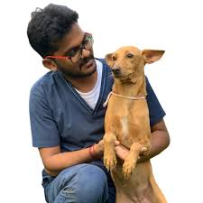

Paws & Wings is a dedicated pet adoption platform committed to helping animals find loving and safe homes. We rescue and rehome cats🐈, dogs🐕, and birds 🦜, connecting them with caring families ready to give them a second chance.
Our mission is simple: Adopt, Care, Love💖. Every pet deserves a loving family and a happy life.
We believe adoption is more than giving shelter — it is about building lifelong bonds between humans and animals.
Join us in spreading kindness, reducing stray animals, and creating a world where every pet is loved.
Mission: To rescue, protect and rehome animals while promoting responsible pet ownership.
Vision: A world where every animal has a safe, caring and loving home.
Pets Adopted
Happy Families
Animals Rescued
Veterinary Doctor

Animal Rescue Volunteer